ICTC 지휘통제절차 웹툰 · 시즌 1
4화 「첫 보고」
선언 + 최초 상황보고 = 지휘권 확립. 무전 한 번에 무엇을 담는가
A면 정문. 한 바퀴를 돌고 돌아왔다. 4층의 불은 5층을 핥고 있다.
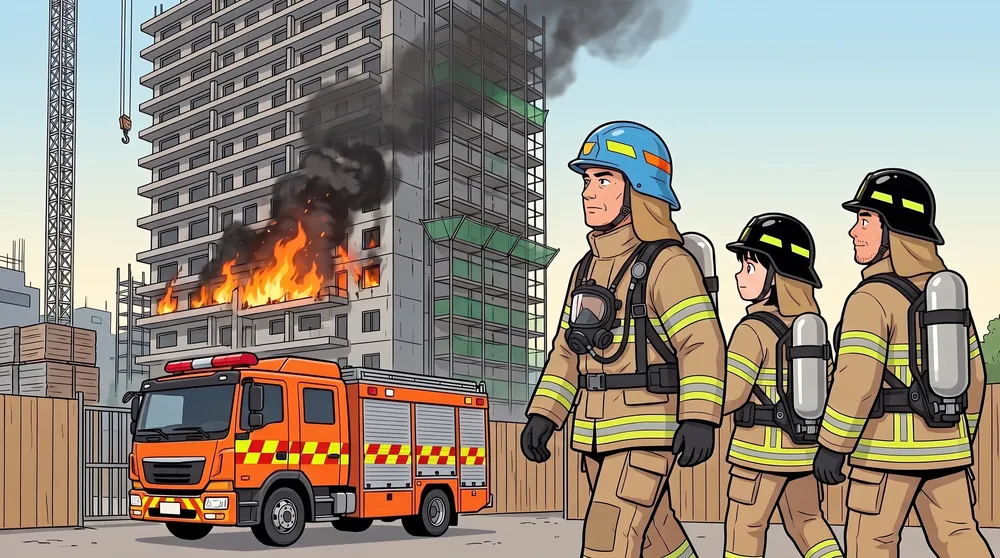
서종근이 무전기를 든다.
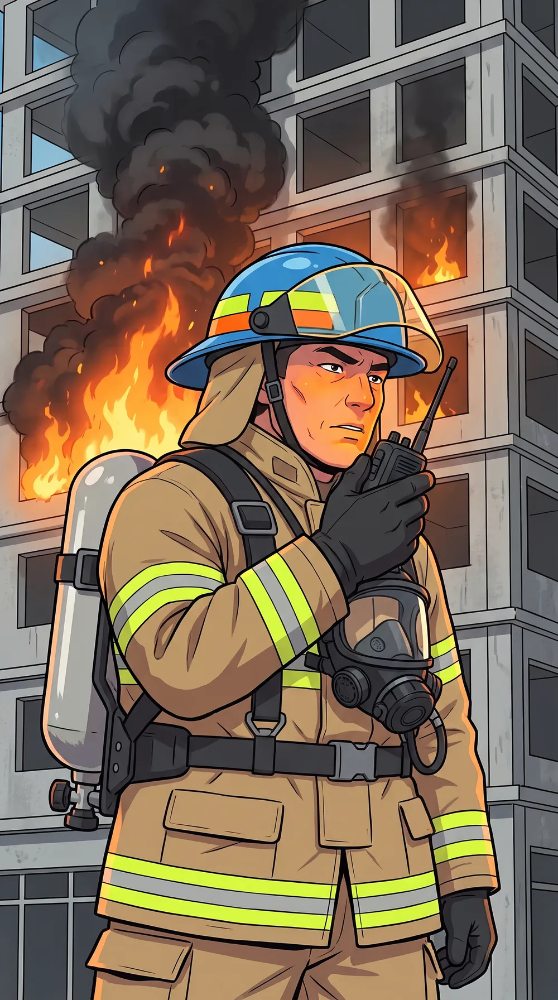
아까 지휘하겠다고 선언하셨잖아요. 또 무전이에요?
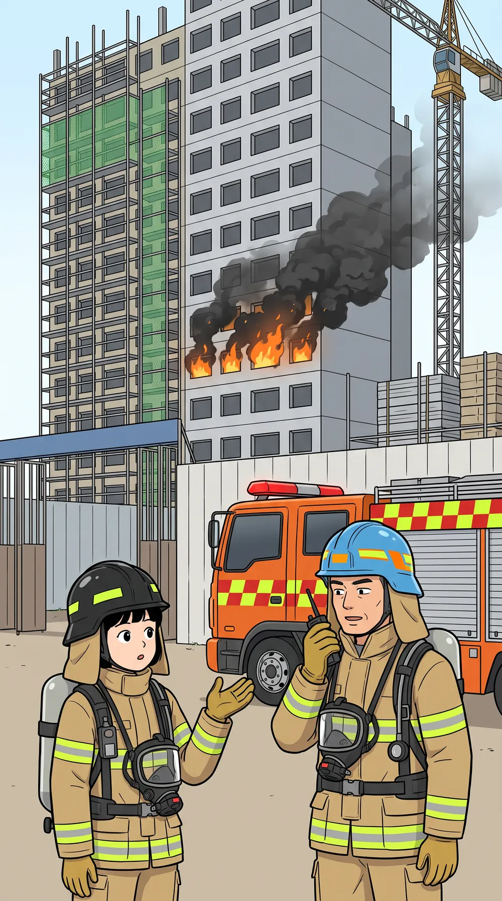
선언은 '내가 맡는다'까지야. 뭘 봤고 어떻게 할지까지 알려야 모두가 같은 그림으로 움직인다.
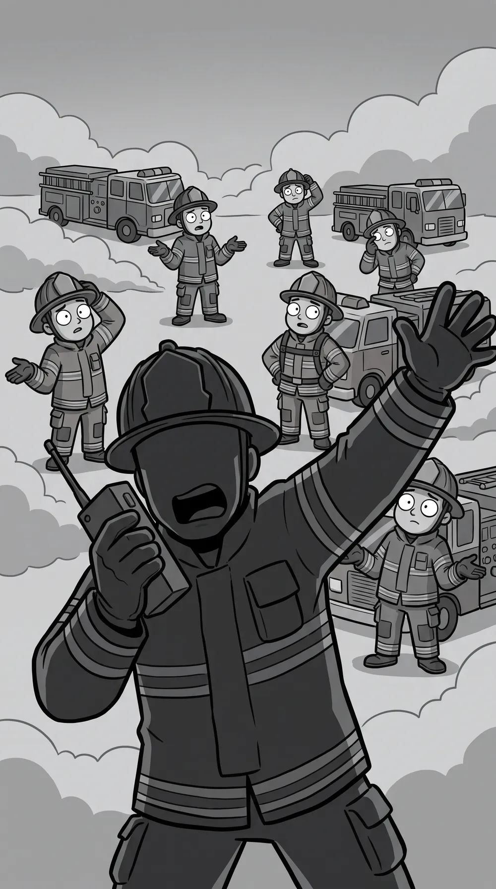
✕ 잘못된 예 — 건물도, 위치도, 방면도, 전략도 없다. 듣는 사람마다 다른 그림을 그린다.
불이 엄청 커요! 사람도 있는 것 같고! 일단 다 와 주세요!
최초 상황보고는 한 번에, 순서대로. 이 보고까지 마쳐야 지휘권이 확립된다.
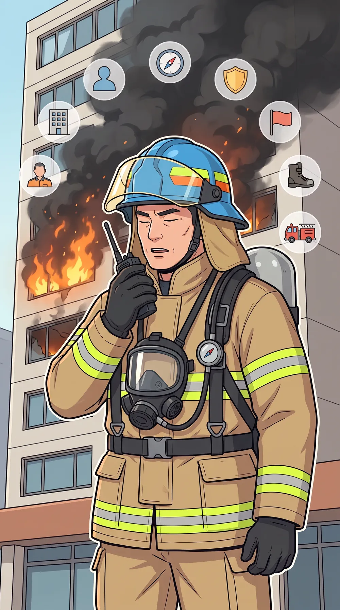
건물, 사람, 방면, 전략, 지휘형태, 활동, 지원.
① 출동대 명칭 ② 재난정보 ③ 건물(용도·규모·건축 방식)
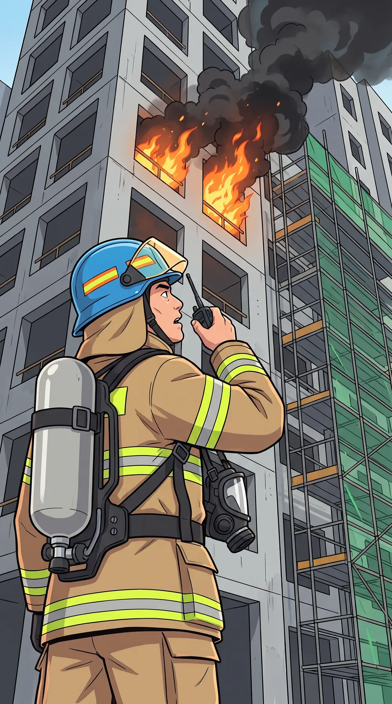
상황실, 여기 진압1대장. 진압1대 현장도착. 가람구 한솔아파트 신축공사현장 A동, 철근콘크리트조 15층 공사 중, 4층에서 화재, 5층으로 연소확대 중.
② 구조대상자: 눈으로 본 것과 관계인에게 들은 것을 나눠서.
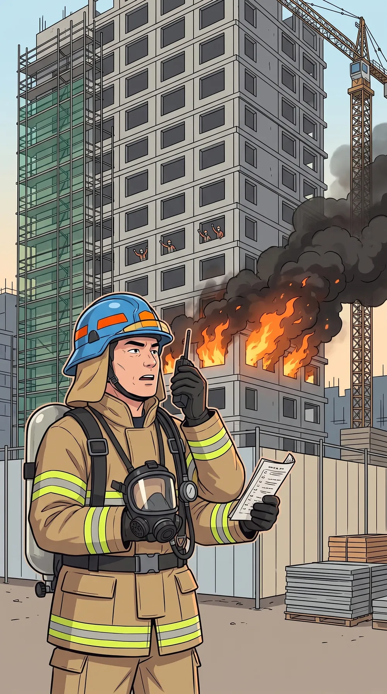
C면 6층 구조대상자 2명 확인. 관계인 진술, 4·5층 작업자 10명 이상 대피 여부 미확인.
④ 위험 요소: 대원 안전과 직결되는 것.
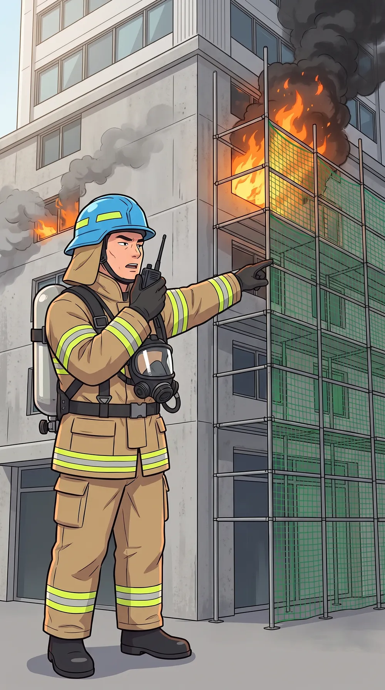
B면 외부 비계·안전망으로 상층 연소확대 우려. 연기는 C면 쪽으로 진행. D면 타워크레인·자재 적치로 접근 불가. 공사 중 개구부·낙하물 위험.
방면 지정 ⑤ 지휘권(신분·위치) ⑥ 소방활동 ⑦ 전략 + 지휘형태
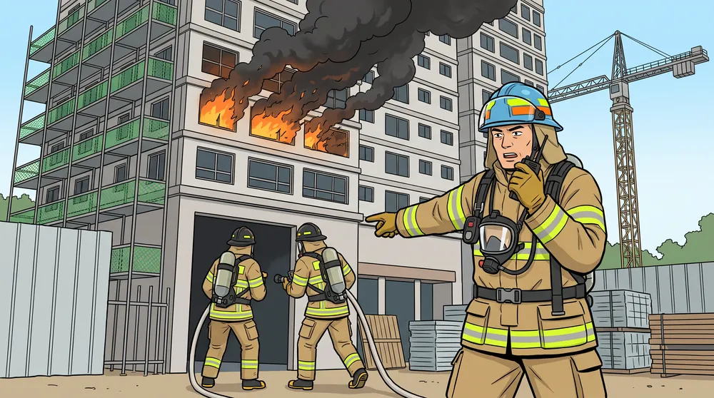
도로면 주출입구를 A면으로 지정. 진압1대는 공격전략으로 4층 진입, 인명구조 및 화재진압 예정. 진압1대장은 A면 주출입구 앞에서 전진지휘하겠음.
다음은 지원 요청… 지금 있는 차만으로 될까?
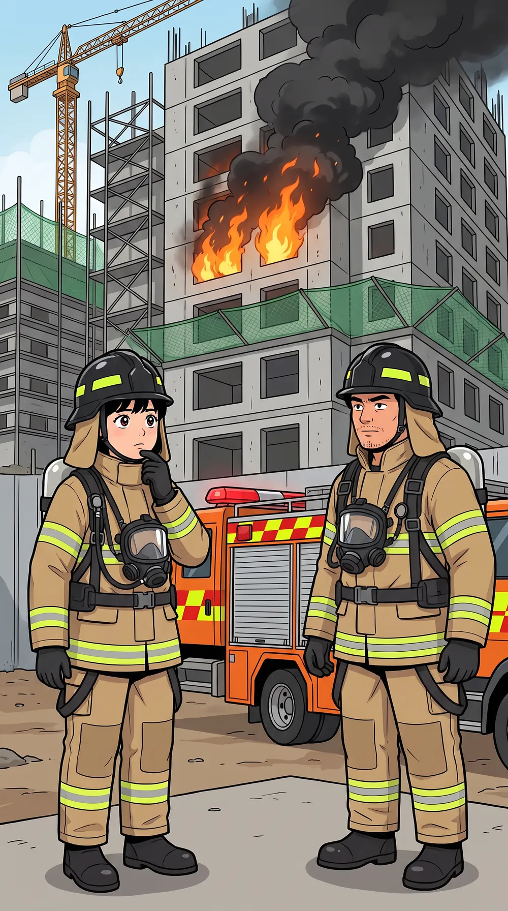
불은 두 층이어도 사람은 열 명이 넘을 수 있어.
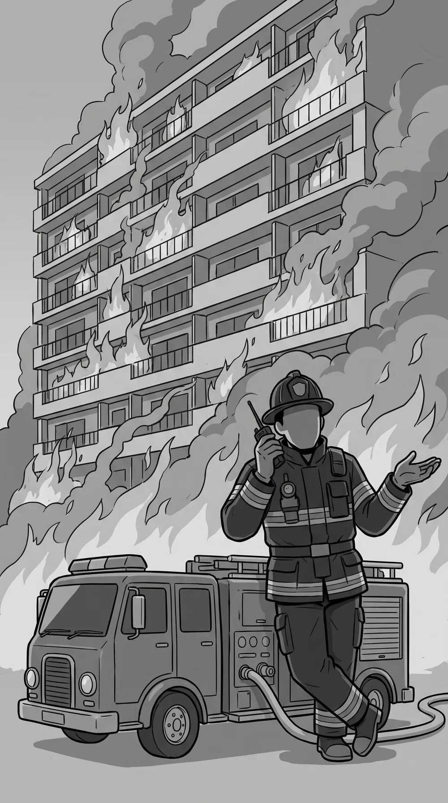
✕ 잘못된 예 — 모자란 걸 알게 된 뒤에 부르면 이미 늦다.
일단 현재 소방력으로 대응해 보고, 부족하면 추가 요청하겠음.
⑧ 지원 요청 ⑨ 차량 진입·회차. 대응단계는 현장지휘관이 발령한다.
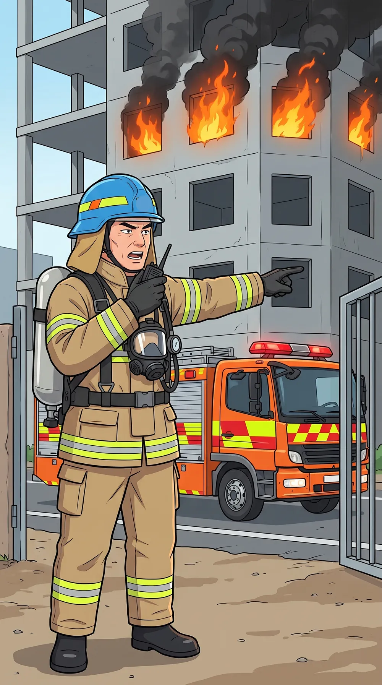
상황실은 펌프차 2대, 구조대 2개대, 구급차 3대 추가출동 바람. 진압1대장은 대응1단계 발령하겠음. 차량 진입은 A면 주도로 정문뿐, 정문 안 회차 공간 협소. 후착대는 한솔로 교차로 대기1단계 유지 바람.
추가 소방력: 상황을 예측하고, 충분히.
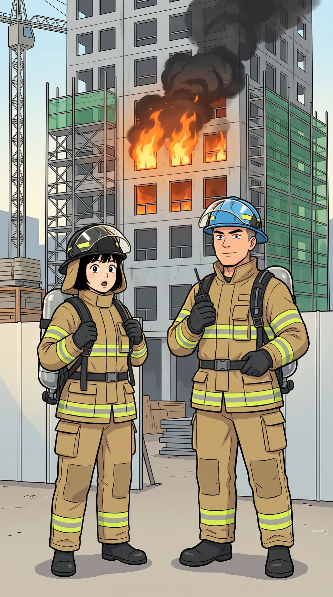
그렇게 많이요?
최악을 가정해서 충분히 부른다. 대응단계도 1, 2, 3 순서 기다리지 않고 맞는 단계를 바로.
최초 상황보고 9개 항목: ① 출동대 명칭 ② 재난정보(연소·구조대상자) ③ 건물(용도·규모·건축 방식) ④ 위험 요소 ⑤ 지휘권 선언(신분·위치) ⑥ 소방활동 ⑦ 전략 ⑧ 지원 요청 ⑨ 차량 진입·회차. 여기에 방면 지정과 지휘형태를 함께.
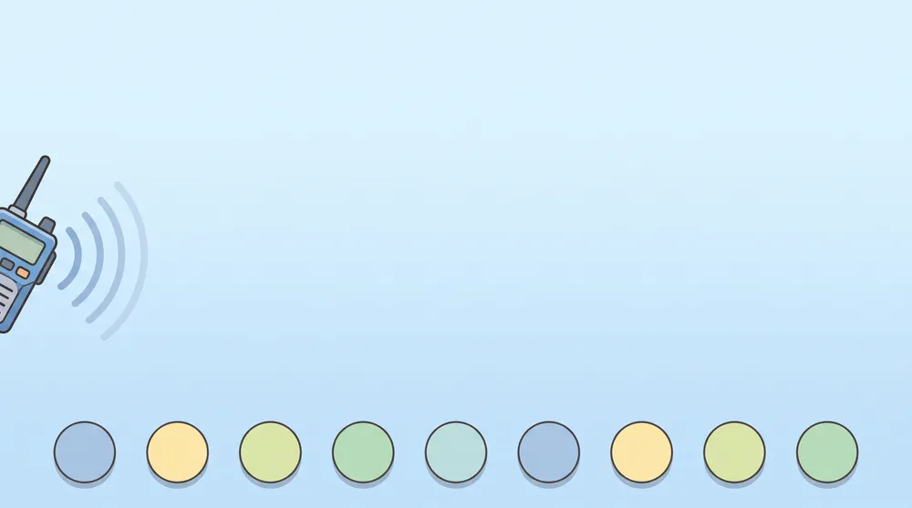
이렇게 큰 현장인데 고정지휘가 아니라 전진지휘예요?
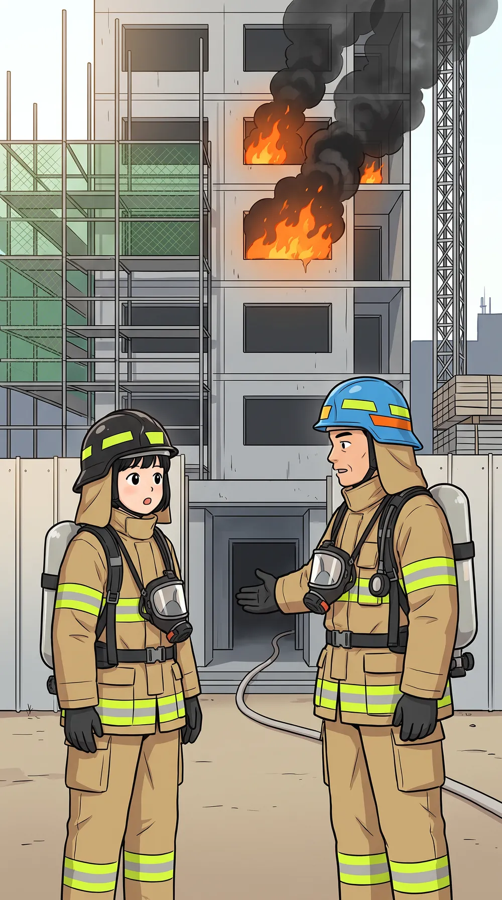
지금은 4층에 사람이 있을 수 있다. 진입대 바로 뒤, 주출입구 앞에서 보고 받쳐야 해. 짧게 끝나지 않으면 고정지휘로 바꾸고, 바꾸면 무전으로 알린다.
상황실은 최초 상황보고를 전 출동대에 다시 전파한다. 대원 안전과 현장지휘관의 신분·위치는 반드시.
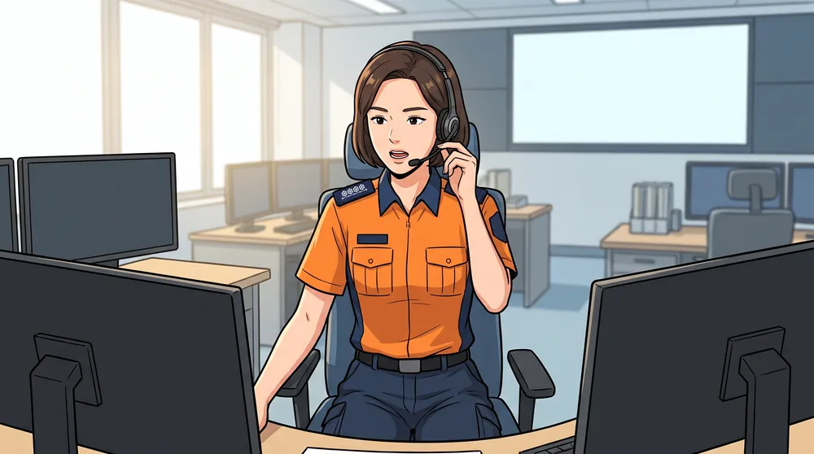
상황실에서 전 출동대에. 현장지휘관 진압1대장, A면 주출입구 앞에서 전진지휘. 공격전략, 진압1대 4층 진입. 공사 중 개구부·낙하물 주의, B면 비계 연소확대 우려. 차량 진입은 A면 정문뿐, 후착대는 한솔로 교차로 대기1단계. 현장지휘관 대응1단계 발령, 펌프차 2대, 구조대 2개대, 구급차 3대 추가 출동 지령함.
구조차 한 대가 교차로를 지나쳐 곧장 정문으로 들어온다. 1착 구조대는 선착대다. 대기1단계 없이 현장으로.
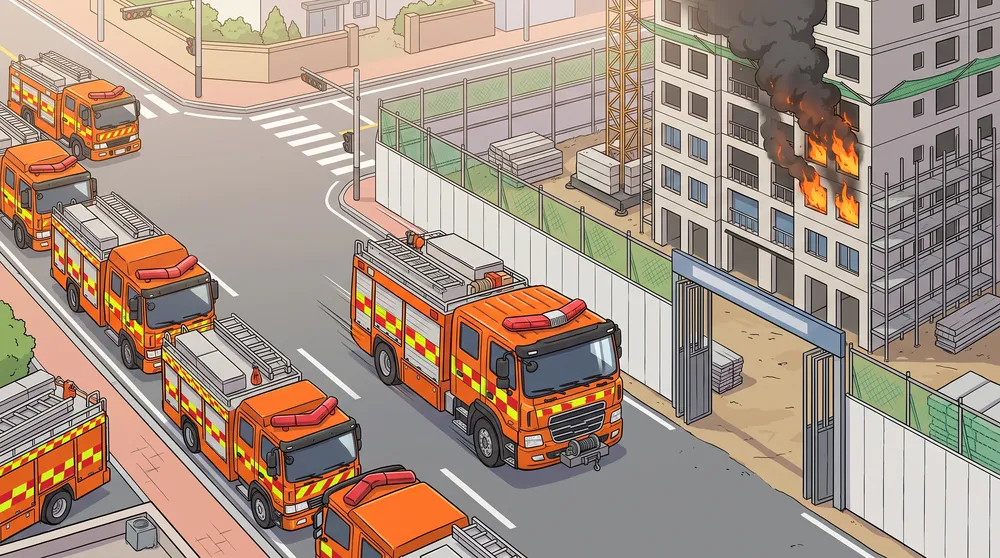
구조1대 구조대원 임동완 소방교.
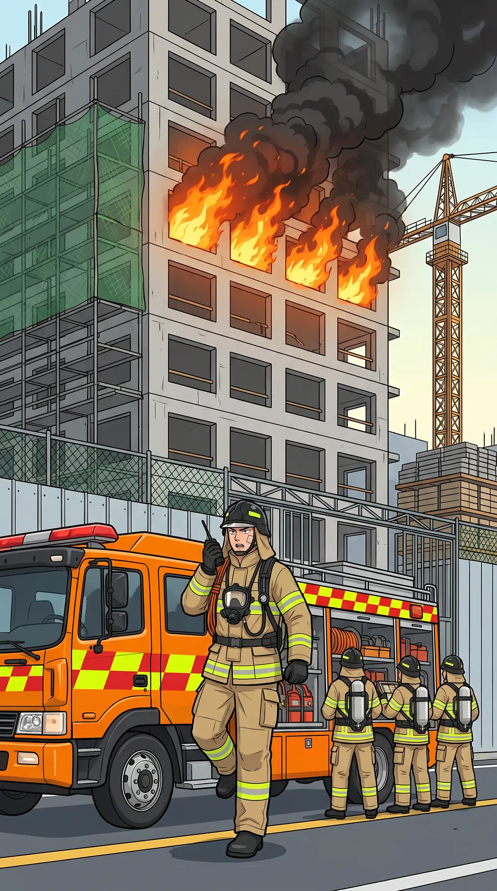
구조1대 현장도착, 대원 4명. A면 정문, 임무 대기.
도착하면 현장지휘관이 누구인지 확인한다. 도착보고 → 임무대기 → 임무지시. 지시 없는 단독·임의활동은 하지 않는다.
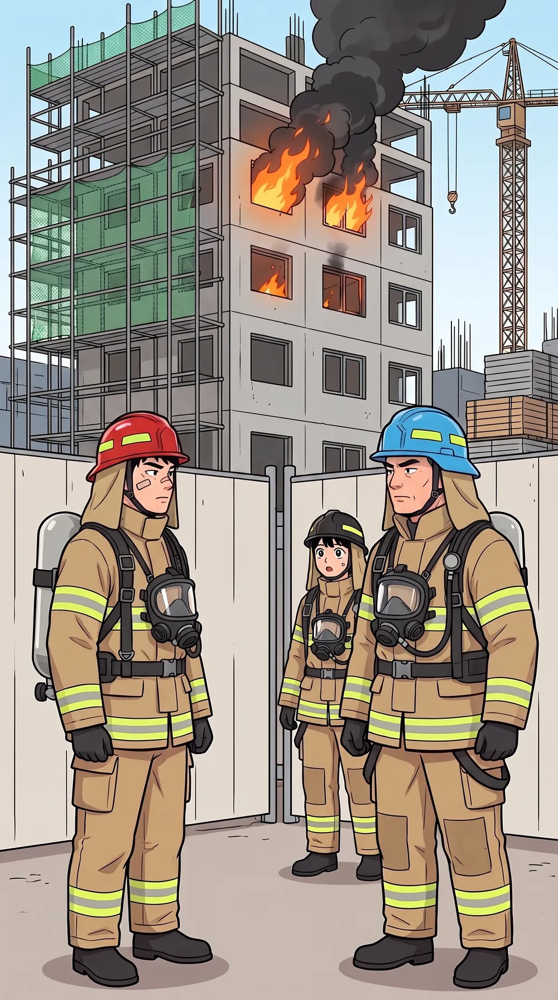
현장지휘관, 진압1대장님 맞으시죠? C면 6층 두 명, 들었습니다. 지시 주십시오.
바로 뛰어올라갈 줄 알았는데…
구급1대장 고기석 소방위. 구급대도 도착보고 → 임무대기 → 임무지시.
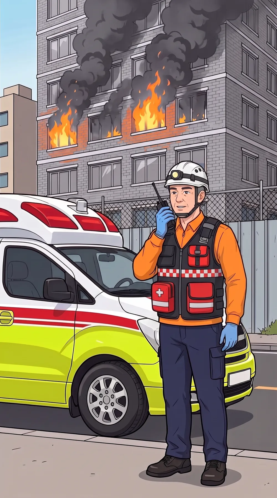
구급1대 현장도착, 임무 대기. 대기 위치 지시 바람.
구급1대는 A면 정문 밖 주도로 한쪽, 진입로 막지 않게 정차해서 대기. 임무는 곧 준다.
들것, 분류표, 처치 가방 내려. 지시 떨어지면 바로 편다.
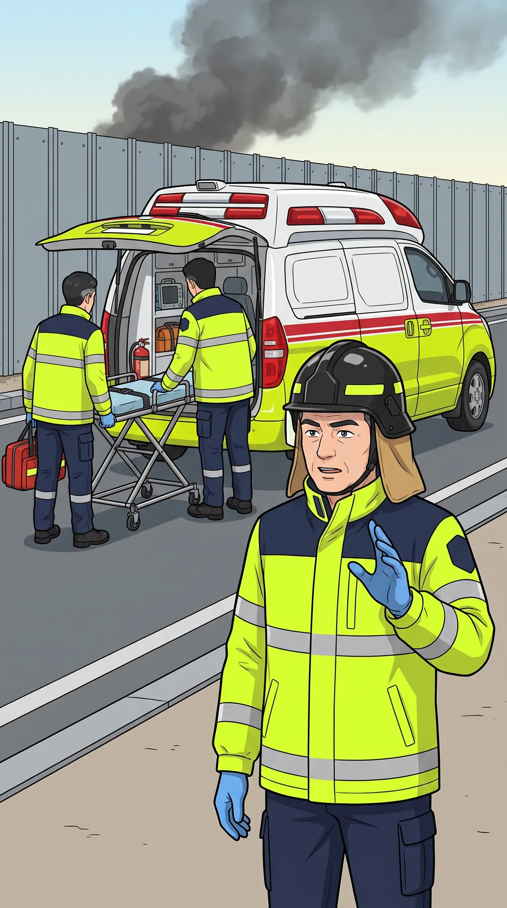
구조대, 구급대 다 왔고, 진압3대는 교차로에서 기다리고… 이제 뭐부터 해요?
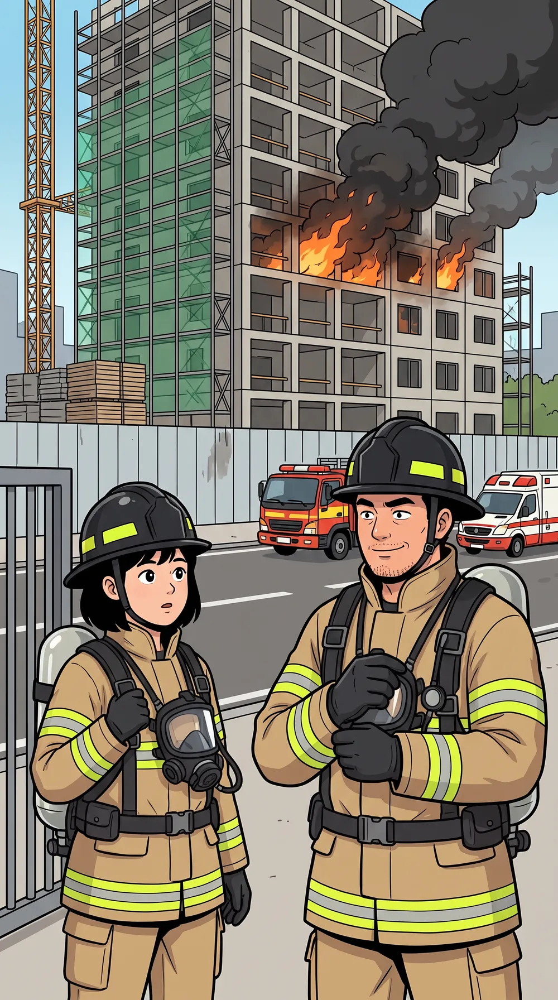
이제 판을 짜야지. 누가, 어디서, 뭘, 어떻게.
무전 한 번에 건물, 사람, 위험, 전략, 필요한 것까지. 그 한 번으로 모두가 같은 그림을 보게 됐다.
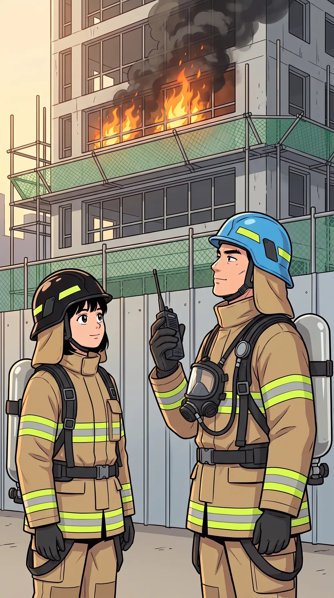
선언했고, 보고했다. 이제 지휘가 섰다.
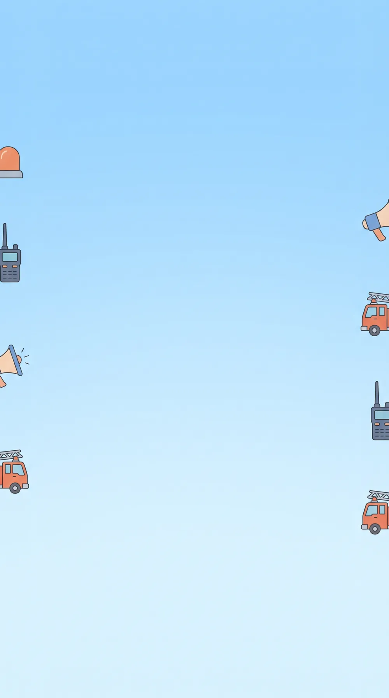
핵심 포인트
- 선언 + 최초 상황보고 = 지휘권 확립. 무전 한 번에, 순서대로SOP 101 2.1 · p.40
- 9개 항목에 방면·전략·지휘형태를 담고, 상황실은 전 출동대에 재전파SOP 101 2.1 · 106 2.3 · p.44
- 추가 소방력은 최악을 가정해 충분히, 대응단계는 바로SOP 103 1.2 · p.76
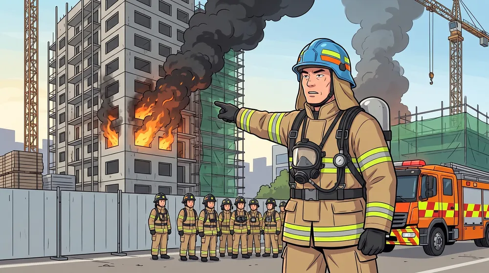
다음 화 — 「첫 판 짜기」. →
기다리는 출동대들에게 임무를. 누가, 어디서, 무엇을, 어떻게.
기다리는 출동대들에게 임무를. 누가, 어디서, 무엇을, 어떻게.
근거: SOP100-113 지휘통제절차 해설(2025.12. 개정판) · 교육용 전 12화만든이: 부산지휘역량강화센터(정종인,서종근,주강호,신태선,고기석,이도경)
 ×
×